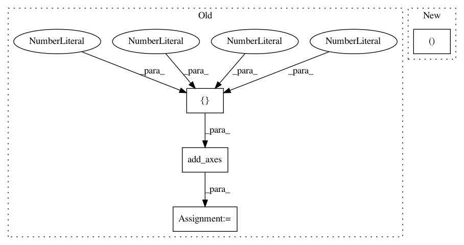

fdad18860aadc13b839f1ba2c08d0d7926687c71,examples/pie_and_polar_charts/polar_legend.py,,,#,13
Before Change
// force square figure and square axes looks better for polar, IMO
fig = plt.figure(figsize=(8, 8))
ax = fig.add_axes([0.1, 0.1, 0.8, 0.8],
projection="polar", facecolor="//d5de9c")
r = np.arange(0, 3.0, 0.01)
theta = 2 * np.pi * r
ax.plot(theta, r, color="//ee8d18", lw=3, label="a line")
After Change
// at an angle of 67.5 degrees in polar coordinates.
angle = np.deg2rad(67.5)
ax.legend(loc="lower left",
bbox_to_anchor=(.5 + np.cos(angle)/2, .5 + np.sin(angle)/2))
plt.show()
In pattern: SUPERPATTERN
Frequency: 3
Non-data size: 4
Instances
Project Name: matplotlib/matplotlib
Commit Name: fdad18860aadc13b839f1ba2c08d0d7926687c71
Time: 2019-08-08
Author: anntzer.lee@gmail.com
File Name: examples/pie_and_polar_charts/polar_legend.py
Class Name:
Method Name:
Project Name: daavoo/pyntcloud
Commit Name: 861d9b291f2402c7f89e05bccf00f446487dd0d0
Time: 2017-03-06
Author: daviddelaiglesiacastro@gmail.com
File Name: pyntcloud/structures/voxelgrid.py
Class Name: VoxelGrid
Method Name: plot_feature_vector
Project Name: matplotlib/matplotlib
Commit Name: 1a2b58abca64976aa89ccaf97e4b229bd722ca28
Time: 2017-05-10
Author: patniharshit@gmail.com
File Name: tutorials/colors/colorbar_only.py
Class Name:
Method Name: